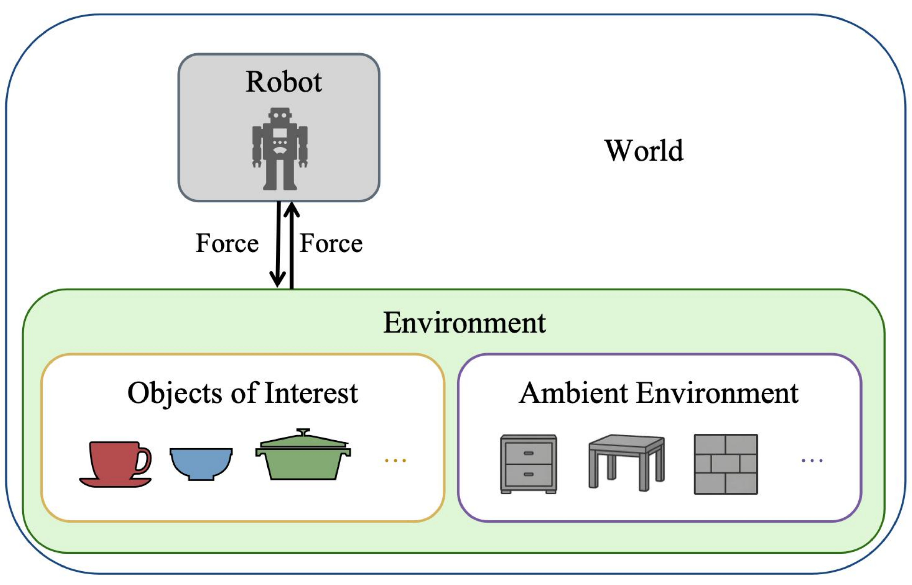

01
World
The world is the set of all objects relevant to an embodied AI task. It consists of a robot and its environment; the environment contains both the objects of interest and the ambient environment.
